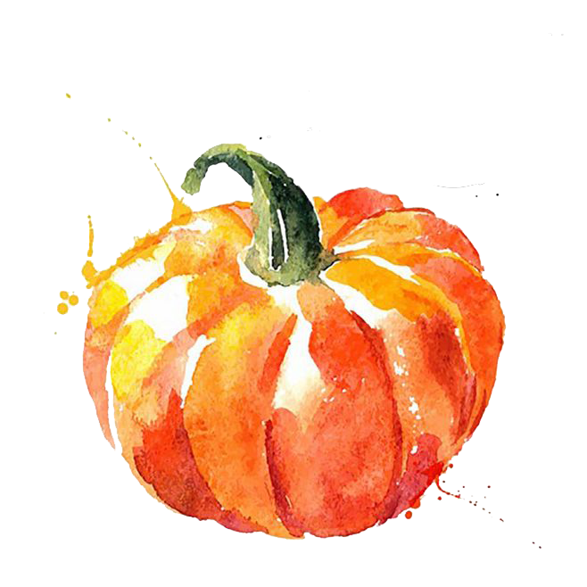
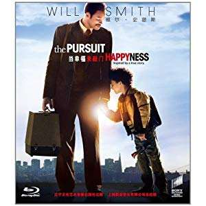

姓名：王楠
年龄：小于20
外号：小学同学取的南瓜
个人形象如下图
不是下面这个南瓜汤噢^_^
兴趣爱好：看电影、看动画、看漫画等等以及推荐优秀的作品
个人特长：无明显特长，只是身高有点儿长
最近状况：赶作业+写大作业+准备期末考试，在爆肝的边缘试探
最近的圣诞节愿望：祝自己写完各科作业
既然提到了我的兴趣是推荐优秀的作品，接下来接受我一波安利吧~
（可以点击链接开始观看噢）
看漫画平台
鉴于本人喜爱题材种类广泛，就放两个常上的漫画网站，上面的作品都挺不错的。
电影
| 作品 | 海报 | 作品介绍 |
|---|---|---|
| 当幸福来敲门 |  | 克里斯•加纳（威尔·史密斯 Will Smith 饰）用尽全部积蓄买下了高科技治疗仪， 到处向医院推销，可是价格高昂，接受的人不多。 就算他多努力都无法提供一个良好的生活环境给妻儿， 妻子（桑迪·牛顿 Thandie Newton 饰）最终选择离开家。 从此他带着儿子克里斯托夫（贾登·史密斯 Jaden Smith 饰）相依为命。 克里斯好不容易争取回来一个股票投资公司实习的机会， 就算没有报酬，成功机会只有百分之五，他仍努力奋斗，儿子是他的力量。 他看尽白眼，与儿子躲在地铁站里的公共厕所里，住在教堂的收容所里…… 他坚信，幸福明天就会来临 |
| 肖申克的救赎 |  |
20世纪40年代末，小有成就的青年银行家安迪 （蒂姆·罗宾斯 Tim Robbins 饰）因涉嫌杀害妻子及她的情人而锒铛入狱。 在这座名为肖申克的监狱内，希望似乎虚无缥缈， 终身监禁的惩罚无疑注定了安迪接下来灰暗绝望的人生。 未过多久，安迪尝试接近囚犯中颇有声望的瑞德 （摩根·弗里曼 Morgan Freeman 饰），请求对方帮自己搞来小锤子。 以此为契机，二人逐渐熟稔，安迪也仿佛在鱼龙混杂、 罪恶横生、黑白混淆的牢狱中找到属于自己的求生之道。 他利用自身的专业知识，帮助监狱管理层逃税、洗黑钱， 同时凭借与瑞德的交往在犯人中间也渐渐受到礼遇。 表面看来，他已如瑞德那样对那堵高墙从憎恨转变为处之泰然， 但是对自由的渴望仍促使他朝着心中的希望和目标前进。 而关于其罪行的真相，似乎更使这一切朝前推进了一步…… |
这两部作品在视频网站均是收费的，资源自取请点击下面按钮^_^
动画
月刊少女野崎君
作品介绍：高中生的搞笑日常生活
观看地址：哔哩哔哩
当然也可以就在我的主页上观看啊，观看此片收获笑容^_^
到结尾了噢，欢迎联系我与我交流对这些作品的想法！
我的联系方式：kiscivnan@gmail.com